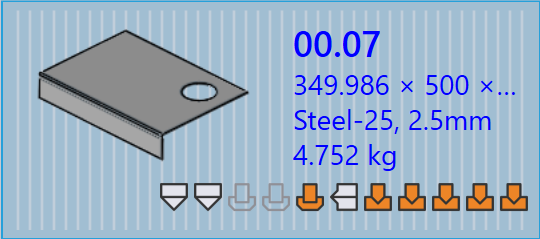

Delpanel
Detta avsnitt förklarar delrelaterade åtgärder såsom Importera om…, Rigga om…, Ändra namn…, Exportera utdata, etc., som används för att hantera delinstanser.

|
|


Importera om…
-
Högerklicka på en del och klicka på Importera om….

-
Alla valda delverktygningsinstanser för alla maskiner rensas inklusive auto-verktygsförda och manuellt verktygsförda instanser.
-
Befintliga utdatafiler (CAD, Böj och Skär) tas bort.
-
Delar återimporteras och ny CAD-validering och verktygning tillämpas för alla maskiner.
-
Nya utdatafiler skapas baserat på det uppdaterade verktygningsresultatet.
Rigga om…
-
Högerklicka på en del och klicka på Rigga om….

-
Alla maskiner är markerade som standard och grupperade som Laser, Stans, Panel och Kantpress.
-
Klicka på OK för att fortsätta. Detta tar bort både auto-verktygsförda och manuellt verktygsförda instanser för de valda maskinerna och raderar relaterade utdatafiler.
-
När kryssrutan Behåll befintliga utdata är markerad kommer endast delar vars utmatningar togs bort tidigare att verktygsföras om, andra utmatningar förblir orörda. Om den är avmarkerad tas alla utdatafiler för valda maskiner bort och regenereras under omverktygning.
|
Ändra namn…
Detta avsnitt förklarar hur man byter namn på en eller flera delar i TruSmartCAM.
-
Högerklicka på delen och klicka på Ändra namn….

-
En bekräftelsedialog för namnbyte visas som visar det aktuella delnamnet.
-
Ange det nya namnet och klicka på bockikonen ✓ för att bekräfta, eller klicka på kryssikonen ✗ för att avbryta namnbytesoperationen.

-
För att byta namn på flera delar, välj alla önskade delar, högerklicka sedan på en av dem och klicka på Ändra namn….
-
En bekräftelsedialog visas med det totala antalet valda delar.
-
För varje del, ange det nya namnet och klicka på bockikonen ✓ för att bekräfta en och en.
-
Om någon del valdes av misstag, klicka på kryssikonen ✗ för att avbryta. Alternativt kan ni högerklicka på delen och klicka på Avbryt ändra namn för att hoppa över namnbyte.
Exportera utdata
Detta alternativ exporterar delutmatningen till destinationen konfigurerad i Fabriksinställningar. (Se Bend Settings och Cut Settings)
Utmatningsplatsen definieras separat för Böj, Vik och Skär i deras respektive utmatningsinställningar. Alla verktygningar associerade med böj-, vik- och skäroperationer exporteras för hela delen.

Som visas nedan sparas de exporterade filerna i den angivna katalogen
(till exempel C:\PraxData\Out\Reports).

| De exporterade filerna beror på operationstypen. För böj- och vikoperationer genereras NC-filer och rapporter. För skär- och stansoperationer exporteras endast delfilerna. |
Del tilldela material
Delar med status Material inte kopplat måste uppdateras före vidare bearbetning. Stegen nedan förklarar hur man tilldelar material.
-
Högerklicka på delen som visar status Material inte kopplat och välj Koppla material.

-
Fönstret Koppla material öppnas.

-
Dialogrutan har fyra sektioner:
-
Förslag - Föreslår automatiskt råmaterial baserat på den importerade delens tjocklek.
-
Alla material - Listar alla materialtyper definierade i TruSmartCAM.
-
Alla råmaterial - Visar alla råmaterial tillgängliga i systemet.
-
Använda råmaterial - Visar de senast använda råmaterialen för snabb åtkomst.
-
-
Ni kan använda fältet Sök… (Ctrl+F) högst upp för att snabbt hitta material. Till exempel, skriv "steel" för att visa alla matchande material i de tre sektionerna.
-
Från den filtrerade listan, välj det önskade materialet (t.ex. Steel-25) från råmateriallistan.
-
Det valda materialet tilldelas delen.
Valsriktning
Valsriktning hänvisar till orienteringen av kornet i en del, vilket kan påverka hur delen skärs och bearbetas. Detta alternativ låter er specificera Valsriktning för en del i delbiblioteket. Baserat på vald riktning kommer delen att placeras i rätt orientering för skärning på de tillgängliga maskinerna.
-
Högerklicka på en delbricka i delbiblioteket eller jobbfönstret.
-
Välj önskad valsriktning:
-
Ingen
-
Horisontal
-
Vertikal

-
-
Delen verktygsförs automatiskt om för alla tillgängliga skärmaskiner baserat på den valda valsriktningen.
-
Delbrickan visar den valda valsriktningen som visas nedan:


